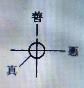

善悪の真諦について ５ （真について）
明主様御講義 「善悪の真諦」 （昭和10年8月25日発行）
「善悪の真諦が解れば大学者に成れるのであって、非常に難しいのである。
善悪は対照的なものである。悪があるから善がある、善があるから悪があるので、それがなくなれば何が残るかと言うと真となるのである。
この真とは、要するに善なのであるが、又一方より解する時は善でも悪でもなく、又善にも悪にもなるのである。
図のごきものである。

世の中で善悪一如というが、一如では一の如（ごと）しと言うのであるから間違いである。
善悪一致、善悪合一なのである。これが結合したといってもよい。
この善悪（経緯）が結合したものゝ中心が真であるから、善でも悪でもなく、光明世界でいかにするかと言えば、我光明世界の人間は真を行うのである。
その行は善でも悪でもない真である。それだからやることが総て和やかで、又非常に滑かに出来て行くのである。
それ故、悪では万事甘（うま）く行かぬ為悪はなくなるのである。
人が当然の事を行うのであるから、善ではなく当り前の事なのだ。
今は半獣世界であるのを今度初めて人間となるのである。
神様が善と悪とを造り、両方対立させて物質世界の進歩を見たのである。
その救いは何かというと、完全なるものを造ることにおいて、意志の違った二つのものを出して競争させたのである。
砂糖
真の味
塩
かりに今までの世を砂糖と塩にたとえて見ると、塩ばかりでは辛いばかりで真の味はない。
又一方砂糖ばかりでは甘いばかりで、これ又真の味がないのである。
人間は小善人と小悪人とである。
全世界も一国すらも、人間の力で如何（いかん）ともする事が出来んのである。
善としては何程の事も人間の力ではなす事は出来んのである。
神様が万能の神様であるなら、なぜ悪を造ったか、そんな悪等初めから造らねばよいではないか、最初から善の世界にすればよいという人が非常に沢山あるが、造られたものと造り主とである。
神
・・・大善 造られた者、即ち人間位の智慧で、神様の御意志が解るものではない。
悪魔・・・大悪 米と水とても炊いて混ぜ合せて初めて美味しくなり、水はどこへ行ったか解らんが美味しい御飯が残っている。炊けば水は消えている。
善と悪との一段上に真があるのである。
善悪も時所位によりて違うのである。
人を殺すにもただ殺せば悪であるが、戦争で殺せば沢山殺す程善である。
仇討も善である。即ち君国の為、親の為であるからである。
しかし、昔の善は今の悪である。彰義隊の連中から見れば薩長は悪に見えるごときもので、色々の革命も時所位によって違う。
明治維新の革命は善である。政治も民政党から見れば政友会は悪に見える。
徹底するとどこまでが善で、どこまでが悪か解らんのである。
まず世の中で人殺しは一番悪であるが、三宅雪嶺氏は又変った説を立てゝいる。
即ち「人殺しが無くて法律だけではどんな悪い事をする様な世の中になるか解らん。
なぜならば合法的にやればどんな悪事でもする様になるのである。
それをこれ以上やれば殺されてしまうと思えば必ず止めて終うのである」と言うのである。
これで見る時は一面の真理がある。
悪事をやれば人に怨まれるし、又自分も悔む様な事になるから損である。
善を行った方が嬉しいから永遠に栄えるのである。今までの世界では悪の方が多かったのである。
それはなぜなるかというに、善悪に対する賞罰が今までは遅かったからである。
悪を働いても解らずに、出世したり、立派になったり、金儲けしていても人に知れなかったのである。
又一方善い事をしても善の効果が解らなかった為に、つまらん事になってしまったのである。
泥棒してもすぐ捕らない故に泥棒するものもあるのである。
ところが、今後はそれが反対になり、賞罰が早くなるから自然悪事は出来ん事になるのである。
今後は直ぐ捕る様になるから、悪い事をするものがなくなるのは当然である。
それなれば、今までなぜ直ちに知れなかったかと言うと、それは今までは夜の世界であったからである。
いかに月夜でも家の中では暗くて解らんので、悪い事が出来たが今後は昼の世界となる為、悪事は直ちに解ってしまう。
即賞即罰の世界であるからで間違った事は早く知れる。直ちに解るのである
思う様にいかんのは何か間違った事があるからである。
これからは悪い事をするのが馬鹿々々しくなるからである。
釈迦の説いた事は善で、阿弥陀の説いた事は悪である。観音の説いたことは真である。
◎
釈 迦・・・善・・・小乗
観音・・・真
阿弥陀・・・悪・・・大乗
釈迦の本流を伝えた宗教は日蓮宗である。この教は了見が小さい。
総て排他的である。自分の言うた事は善で、他は悪であるという寸法である。
日蓮が布教の初めから、念仏無間、禅天魔、真言亡国、律国賊などと百方攻撃したことでも了解出来るのである。
日蓮宗の一層やかましいのは仏立講である。善でも行き詰る。
又悪でも行詰る事は明かである。親鸞上人の言った「善人は救われる況（いわん）や悪人をや」と言うのは実に悪である。
この言を以ってすれば、善人より悪人の方が救われる可能性が強い事になる。
これは仮相である。空である。何となれば善も悪もなくなるからである。
実相が即ち真である。
実相真如と言う仏語があるが、真如というのでは本当ではない虚である、虚々実々という言葉もある。
実相＝真＝日 真如＝仮＝月
善が悪であり、悪が善だと言うのだ。
法律は悪人を保護するものである。世界より病気を無くする我々を責め、人を公然殺す医者を保護し、又助けるのである。
これこそ法律の悪の最悪の見本である。国防の為の軍備は善であるが、イタリアがエチオピアを攻めるために軍備をしているこれは悪である。
新聞も三面記事を出すから悪が余計多くなるのだ。この三面記事を見るから人の真似をするのである。
要するに今までは仮の娑婆である。善悪両道を出したのは人間の智慧を出させる為で、善悪闘争をなさしめたのである。
競争がなければ智慧は出ない。
同じ稲でも昔は実が少なかったが、今は非常に多くなり、一穂に三百粒も五百粒もつくようになった。
今にもっと沢山実る様になる。
世の中が進歩して行くからまだまだ果物は大きくなり、沢山実る様になるのである。
人間の智慧は大光明世界になるまでにはまだまだ発達する。
煙草は一層脳を良くする為に喫ませる様になったのである。
智慧も二千年前よりも非常に進歩しています。
二千年前の人を銀座へ出せば一日で死ぬかも知れんのである。
悪をこの世に残したのも智慧を発達させる為にしたのである。
国を守る為に軍備などした為に各国互に競争することになり、この為ヨーロッパ等も発達したので、隣国より侵略されぬ様に骨折ったのである。
いよいよ今まで進歩したのであるから、この位で悪を止めて完成へ取掛るのである。
観音会の建ったのはこの完成の御用である。」 （「観音講座 第五講座」より）
明主様御講話 「善悪は人類がある限りある」 （昭和26年12月6日）
「今はそこまで行っていないが、神様も一日増しにメシヤ教のために働くということになって、今に総動員になる。
神様が、メシヤ教でなくちゃ救われないんだからね。
だから、今度地上天国に出すが、私が京都に行ったとき、方々の神様がご挨拶に来たり・・・いろいろしたが・・・そういうようなもので、神様が救われなければね。
というのは、その神様というが、それを支配している神様があって、
その神様が、位が低かったりあるいは邪神のほうの系統になったりしてね。
だから、罪の裁きを受けなければならないから、早く最高の神様に御用をして救われたいと、こういうわけだからね。
だけどやっぱり、そういった人間が間違ったことしたり、知らないで・・・
良いことと思って悪いことをやったりするというのも、今まではやはり必要があったんだからね。
一番おもしろいのは、世界の二大長流としては、アメリカの資本主義と、ソ連の共産主義ですね。
どっちも反対のものだがね。つまり資本主義ができるから共産主義ができるんだね。
つまり資本主義は、共産主義が作ったものです。
だから、封建主義が人民の自由を奪うからして自由主義ができる・・・こういうことになる。
善というものは、悪が生むようなものなんですね。
生むというよりも、悪があるから善がある。
だから、善悪というものは、人類がある限りあるんですよ。
しかたがないが、今まで悪のほうが力があり過ぎた・・・勝ち過ぎた。
善のほうが圧迫されたり、苦しまされた。
そこで不幸というものが生まれる。
五六七になると、善のほうが強くなって、悪のほうはある程度以上はできなくなる。
そこで、幸福の世界になる。人間だってそうですよ。
仏さんのような人なんて、初めからありませんし、もしあるとすれば、何にもならない。
「沈香（ちんこう）も焚かず屁もひらず」というみたいになる。
つまり、悪を抑える善の力が強ければ、立派な人間です。
仏教のほうじゃ、生き物を殺すのは、すべて殺生だからと言うんで、
地べたを歩くと蟻を殺すから、地べたも歩くことができないということになっちゃう。
それから、今でもアジアの・・・東南アジア辺りは、フイフイ教辺りは、ずいぶんそういうやり方ですね。
こういうのは、つまり善が無抵抗主義になるんですね。
「その場合、ちょっと見は良いように見えますので・・・」 （註 茶色の文字は信者の発言）
そうです。それは確かに良いですよね。良いけれども、結局滅びたり悪が跋扈（ばっこ）したりするからね。
この頃インドなんか、気がついてきたんで、だいぶやり方が変ってきたがね。
あくまで、善のほうが勝つという・・・抑えつける力があるということが本当なんですね。
そこで、やはり十字になるんですよ。経は善ですからね。緯のほうが悪ですね。
どっちに偏ってもいけない。つまり経のほうが緯よりかちょっと長ければね。
それで、同じでも霊のほうが勝つ・・・霊主体従だからね・・・原則になっているから、それで良いには良いがね。
それで、私はいつか男女同権論ではいけない。
男女合憲論と書いたが、そこで男が五分五厘で、女は四分五厘ですね。
人間の簡単なことはそれで良いが本当の大きなことから言うと九分九里・・・神は一厘になっている。
悪のほうが一厘でも勝つとすれば世界は崩壊している。
そこで九分九里と一厘・・・あるいは神は十全とね。
だから、大本教のお筆先に「大本は一厘の仕組であるから、一厘の御魂が出たら世界は引っ繰り返るぞよ」というのがある。
一厘で、手の平を返す。で、一厘というのは、つまり私なんですよ。
これは先にも話したことがあるが、ある人から古銭・・・天保銭を一枚、五十銭銀貨、昔の一厘銭を一枚と、三つもらったことがある。
天保銭は年号は書いてありませんが・・・大本教の教祖というのは天保年間に生れた人で、聖師様は明治四年に生れた。
そうすると、五十銭銀貨というのは、明治四年なんです。
私は一厘だから一厘をもらった。
そのとき神様は、おもしろいことを知らされたと思った。
だから、大本教の教祖は経の御魂・・・変性男子でね。
変性女子は聖師様で、聖師様は緯の御魂であるからとね。
経と緯を結んで、真中のポチだね。つまり心棒みたいなものが一厘になるわけです。
で、一厘で手の平を返すというのは・・・私がやっていることは、一厘で手の平を返すことになる。
今までのあらゆる間違った文化ですね。・・・それをはっきりさせるために・・・ひっくり返っちゃう。
ただ、理屈だけじゃ駄目だから病気は薬をなくして治して健康にしてしまう。
それから、食糧でも・・・作物でも、肥料を使わないで増産する。農業をひっくり返しちゃう。
それから、犯罪は魂さえ神様と繋がれば犯罪はなくなる。
と、みんな一厘でひっくり返すという意味になるんだね。
夜の救いが昼の救いになる。つまり、暗（くらやみ）が昼間になるというわけですね。
神様のほうは、そういう風に決まっているんだからね。
そういうことも「文明の創造」に書いてある。
今「文明の創造」の天国編というのを書き始めてね。
最初の所を時間があったら読ませるつもりだったが、これは非常におもしろいんです。
今日読ませようと思ったのは、国際関係とか議会とかね。そういうものの変り方ですね。しかし、何しろ非常な大変わりですからね。
ただこのままで行くなんて、そんな生易しいことじゃ、手の平をひっくり返すなんてできない。
つまり今までのやり方では、二致も三致も行かなくなるんですね。
病気なんかも非常に増えて、これは今信者の人でも、古い人でも、幹部の人でも非常に浄化が起こるがね。
それが世の中に・・・一般にそうなってくるね。
医学で・・・医者が治そうとすると、逆になってくるから、いよいよいけないということになる。
メシヤ教に縋らなければ助からない・・・病気は治らないということがだんだん分かってくる。
そこで、一遍にひっくり返っちゃう。
浄化を止めよう止めようと努めている。浄化が起こると、熱が出て、注射やいろんなことで浄化を止めているので・・・わずかに肩でフラフラしてね。
この間新聞にあったでしょう。一時病気を止めている、その後が怖い、とね。
今度出るがＢ・Ｃ・Ｇで一時浄化が止まるから、それで良いと思っているが、今度は、それで止まらなかった悪質な病気がうんと増えると書いてます。
何しろ、私が書いた通りに、段々出てくるから・・・大本教のお筆先に「神の申したことは一分一厘も違いはないぞよ。髪の毛筋の横幅ほども違いないから・・・」ということがありました。」
明主様御垂示 「善のほうが悪にちょっと勝てば良い」 （昭和26年11月5日）
信者の質問
「自分で過去を振り返って見ましても、むしろ信仰に対して反対する人のほうが本当だと考えられます」
明主様御垂示
「そうです。そこに一つの、その人は力・・・意志ですね。
意志を持っているからね。
だから、考えて見ても、難しい問題でもあり、おもしろいものでもあるね。
言うに言われない。・・・これを「妙」と言いますがね。妙智力ですね。
だから、今日の論文で、悪についてなにしましたが、あれも今まで説かなかったんです。
悪が必要だったということは、今まで説かなかったですね。
しかし、永遠のものではない。
ある時期にいくとなくなる。
しかし、五六七の世になってもぜんぜんなくなるんじゃない。
善のほうが悪に勝っていくんです。
今までは善のほうが、悪に負けるんです。
しかし、徹底的に負けるんじゃない。
ある時期にいくと勝ちますが、それが遅かった。
人によっては、その人一代悪にやられたのがあるが、だんだん善のほうが勝つようになる。
だから、わずかですよ。
善のほうがちょっと勝てば良い。
悪が四分九厘で、あと善だと良い。
どうせ人間は、体欲がある以上、女が欲しい。
博打がしたい、競輪だとか・・・パチンコなんてね。
そういう気持ちがやることは、人間しかたがないですね。
しかし五分を抜かなければ良い。
四分九厘なら、五分のほうで抑えるから間違いない。
だから、邪神は九分九厘、神は十だ・・・十全だと言うが、悪は九分九厘までいくが、神様の十は一厘違うからね。」
明主様御垂示 「善のほうが悪に少しでも勝てば良い」 （昭和26年11月8日）
信者の質問
「本日の信者の質問「善と悪」の御論文で、自己保存のための本能は与えられますが、逸脱しただけは・・・」
明主様御垂示
「逸脱というのは。」
信者の質問
「護るというような・・・」
明主様御垂示
「護るというのがおかしい。というのは、保存じゃありません。
進歩です。競争がなければ進歩・・・しないんです。」
信者の質問
「自己なり、団体に許される・・・」
明主様御垂示
「いや、許されるじゃなくて、必要がないんです。
一つの・・・固まりがあるから・・・泥棒があるから・・・護るので、泥棒がなければ開けっ放しでよい。」
信者の質問
「悪はそういうところから生れてきたので・・・」
明主様御垂示
「生まれてきたのではなく、神様が・・・必要があるからつくったんですよ。
仮に、地球がまだ固まらない時分にはマンモスとか、いろんな龍神を・・・暴れさせて固めたでしょう。
そういったものが今あったらたいへんですからね。
こんな家なんか、ぶっつぶされちゃう。
しかし、それは必要だからあった。
悪というのは、人間の形をした動物です。
ところが、動物の形をした人間はもう要らなくなった。
だから、家畜のような大人しいものは残して、虎や狼はだんだん減っていく。
蟒（うわばみ）なんかなくなってくる。
昔、俵藤太秀郷（たわらのとうたひでさと）が松の木と間違えたくらいだからね。
しかし、人間の形をした動物はなくなるんです。」
信者の質問
「人間に必要だったので・・・」
明主様御垂示
「神様がつくったんだからね。
だから、必要というのもおかしいくらいなものです。
副守護神というのは、そういう役をしていたんです。獣ですからね。
そしてまた、人間は堕落すれば獣になると言うでしょう。
獣と言っても、家畜じゃない。獰猛なものです。
今、ほとんど獣で・・・ただやり方がこざかしくなっただけですね。」
信者の質問
「我と執着は副霊が起こさせるのでございましょうか」
明主様御垂示
「それが、そうきめることはできないんです。
執着にも、善と悪があるんです。
世間の執着は、悪のほうがずっと多いんです。
私が善で救済する。どうしても、世の中を良い世の中にするというのは、良い執着です。
毎日朝から晩まで考えているから、たいへんな執着です。
しかし、それは良い執着です。
今までの執着は悪だったから、執着が悪いようになるんです。」
信者の質問
「布教上、執着がかえって障りになるようでございますが・・・」
明主様御垂示
「ところが、その執着が本当の執着じゃない。小乗なんです。
だから、小乗の善は大乗の悪になると言うでしょう。
一生懸命で、熱心な人がかえって危ないようなことが良くあります。
お邪魔になるようなことがね。それは小乗だからね。
ちょうど、終戦前の忠君愛国ですね。
楠木正成、吉田松蔭だとかね・・・ああいう祖先の思想を受け継いだために戦争を起こした。
してみるとああいうのは、小乗の善なんです。
そこで私は信者の質問「世界人たれ」と、論文を出したでしょう。
世界の人間みんなが同じように見なければならない。
そうすれば、そんな侵略戦争なんか起こす必要はない。
つまり今までの戦争や国際間のことは、世界中が小乗の善だったからです。
自分の国だけを幸せにしようとした。自分の国民だけと思うから、みんな喧嘩になった。
中国人だって、そう思い、朝鮮人だってそう思う。
日本が人口が増えた・・・広がっていかなければならないから、中国が広いから入ろうとすると、入っちゃいけないと、武力をもって防ぐでしょう。
日本は、武力をもって入り込もうとする。これが戦争になる。
反対に三国のうちで、人口が増えたら、あなた方は人口が増えてお困りでしょうから、私のほうは空いているから、お入り下さいと言う。
それが、本当の大乗の善です。」
信者の質問
「執着を取ろう取ろうというのが、一つの執着になるということが・・・」
明主様御垂示
「あります。取ろうということが執着です。
なぜなら、取ろうと思っても取れないのは、いかに執着が強いかということです。
簡単に取れれば、そう思わなくても良いがね。」
信者の質問
「化学肥料とか、薬物は悪を助長していたと考えて・・・」
明主様御垂示
「そうです。あれで曇らせたからね。血が濁るから霊も曇る。
そこで、動物霊がそれだけの力が出るから、それだけ悪いことをする。
だから、あれが根本です。
肥料を使わないこと、それから薬を使わないこと、これが根本ですね。」
信者の質問
「進んできますと、大乗の悪・・・悪と言う必要はなくなるわけで・・・」
明主様御垂示
「いいえ、大乗の悪でも、悪は悪ですよ。」
信者の質問
「悪を必要としないわけで・・・」
明主様御垂示
「そうです。小乗の悪は残るんです。何世紀かの間は残ります。
そんなに短い期間に、悪がおさらばになるということはありませんからね。
善と悪で、善のほうが少しでも勝てば良い。
悪が九分九厘でも、善が十あれば良い。
悪が枠から突き破らなければ良い。
あの女は、実に好きだといって、思っているのは差し支えないが、手を握ればそれだけ線を越えたんだからね。」
信者の質問
「相手が喜んでもでございますか」
明主様御垂示
「相手が喜んでもです。あなたにしても、奥さんが見たらどうですか。」
信者の質問
「結婚してない場合には・・・」
明主様御垂示
「しかし、結婚の意志がなければいけない。」
信者の質問
「自分で悪と思わなければよろしいのではないのでございませんでしょうか」
明主様御垂示
「罪ですよ。行為がいけない。
感じより、行為のほうが大きい罪です。
人を喜ばせるのが根本だからね。
だから、そうすることが奥さんが喜べば良いです。
しかし、両方で協力的にすると喜びますが、一時的ではいけない。
永遠でなければならない。」
明主様御垂示 「絶対の善もなければ絶対の悪もない」 （昭和28年5月1日）
信者の質問
「毒素の解消という項目で、毒素は雲のようなものだ、鱗雲（うろこぐも）なら結構だが、という所がございますが、
鱗雲でも何でも雲はみんな悪いのだと解釈しなければならないだろう、と突っ込んでまいりました」
明主様御垂示
「それはこういう解釈をしたらよいです。
善でも、善ばかりではいけないので、悪も混じらなければならない。
また悪でも、悪ばかりということはないので、善が混じっているのです。
雲でも良い働きをするものがある。
ですから絶対の善もなければ絶対の悪もないのです。
善の中にも悪があるのです。
メシヤ教でいろいろな救いをやっているが、医学のほうの間違いを徹底すると、医者のほうでメシが食えなくなるのが出る、そうすればそれは悪です。
だから全体の雲でもそういうことがあるのです。
前に人殺しということで、三宅雪嶺（せつれい）の説を読んだことがありますが、うまいことを言ってます。
「殺人ということもなくてはならないというのです。
もしそれがなければ、いかに人を苦しめるか分からない。
しかし殺人というものがあるために、人を苦しめるということがある程度でくいとめられる」ということを書いてましたが、これは真理です。
あんまり酷いことをすると、もしかすると彼は自分を殺しやしないかということがあるから、ある程度で弱まるわけです。
ですからそういった殺人というのは善の働きもあるわけです。」
明主様御垂示 「大善は必ず小悪を伴う」 （昭和24年4月20日発行）
信者の質問
「浄霊によって善人と思われる人が助からぬ場合があるのに
まったく悪人としか思えない人で助かる場合がありますのはいかなる理由でしょうか。」
明主様の御垂示
「一般に人間の眼からみて善人悪人を決めるが大いなる間違いである。
これは神様からみると往々異う場合がある。
「信仰雑話」にあるごとくすべて小乗と大乗とあってこれによって見方が違う。
人を観る場合大乗的にみなくてはいけない。
善人と言っても本当の善人は極めて少ないので、
ふつう善人というのはたいてい意気地なしで、
概して働きのある人は多く悪人に見えるものである。
神様の御眼からみれば善人といっても役に立たぬ人間はこの世の穀つぶしで一種の悪人である。
大善をする場合は必ず小悪を伴うもので、これはしかたがないのである。
その際小悪のみをみると悪人としか出見えない。
また悪人からみれば善人は悪人である。
要するに簡単に善悪を決めることはできない。
善悪はまた時代によっても違う。
忠君愛国思想も民主主義の現在では悪になる。
要するに全人類平等に幸福にすることでなくては本当の善ではない。」